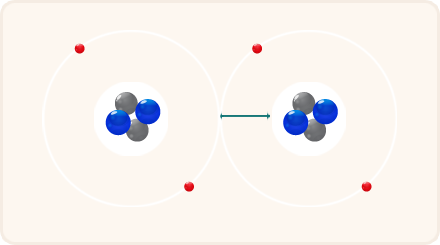
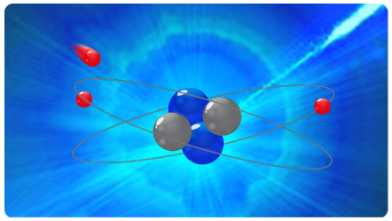
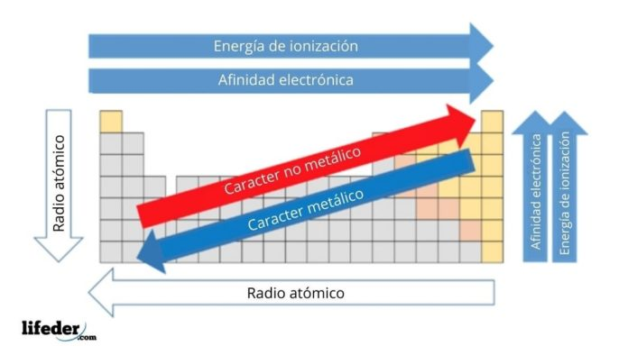
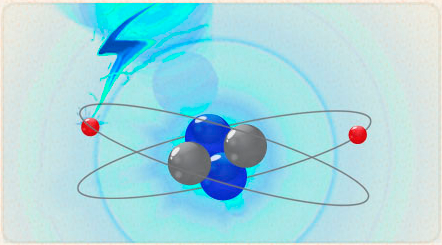
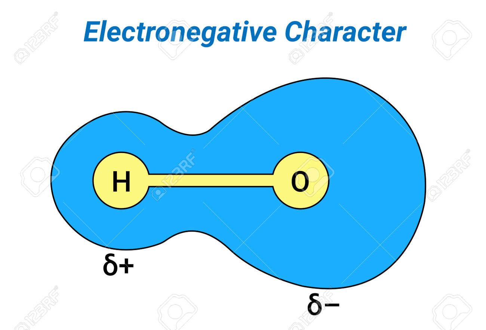
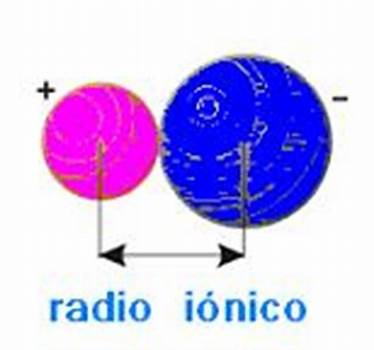

Instituto Tecnologico Superior de Irapuato
Raul Solorzano Hernandez IS23110328 10/03/2024 Grupo "A"
Materia: Quimica general
Profesor: Jose Luis Castro Guillen
Carrera: Ing. Sistemas Computacionales
Propiedades Periódicas
Radio Atomico
Definición: Es la distancia promedio entre el núcleo de un átomo y su capa más externa de electrones.
Tendencia: Disminuye de izquierda a derecha en un período y aumenta de arriba hacia abajo en un grupo.
Importancia: Determina el tamaño relativo de un átomo y su capacidad para formar enlaces químicos.

Afinidad Electrónica
Definición: Es la energía liberada cuando un átomo neutro en fase gaseosa gana un electrón para convertirse en un ion negativo.
Tendencia: Aumenta de izquierda a derecha en un período y disminuye de arriba hacia abajo en un grupo.
Importancia: Indica la tendencia de un átomo a aceptar electrones y formar iones negativos.

Carácter Metalico
Definición: El carácter metálico es la medida de la tendencia de un elemento a exhibir propiedades típicas de los metales, como brillo, conductividad eléctrica y térmica, maleabilidad y ductilidad.
Tendencia: El carácter metálico aumenta de arriba hacia abajo en un grupo y disminuye de izquierda a derecha en un período en la tabla periódica.
Importancia: Los elementos con un alto carácter metálico tienden a ser buenos conductores de electricidad y calor, tienen lustre metálico, son maleables y se pueden formar en hojas delgadas (son maleables) y en alambres (son dúctiles).

Energía de Ionización
Definición: Es la energía requerida para eliminar un electrón de un átomo gaseoso neutro en su estado fundamental.
Tendencia: Aumenta de izquierda a derecha en un período y disminuye de arriba hacia abajo en un grupo.
Importancia: Indica la facilidad con la que un átomo puede perder electrones y formar iones.

Electronegatividad
Definición: Es la capacidad de un átomo para atraer electrones hacia sí mismo cuando está enlazado a otro átomo.
Tendencia: Aumenta de izquierda a derecha en un período y disminuye de arriba hacia abajo en un grupo.
Importancia: Determina la polaridad y la naturaleza de los enlaces químicos, influyendo en las propiedades de las moléculas y compuestos.

Radio Iónico
Definición: Es la distancia entre el núcleo de un átomo y la ubicación de sus electrones de valencia en un ion.
Tendencia: Sigue una tendencia similar al radio atómico.
Importancia: Afecta las propiedades de los compuestos iónicos, como su solubilidad y estabilidad.

Referencias
Porto, J. P., & Gardey, A. (2022, 27 junio). Radio atómico - Qué es, utilidad, definición y concepto. Definición.de. Recuperado 10 de marzo de 2024, de https://definicion.de/radio-atomico/
Radio atómico. (s. f.). Recuperado 10 de marzo de 2024, de http://objetos.unam.mx/quimica/propPer_RadioAtomico/index.html
colaboradores de Wikipedia. (2023, 15 diciembre). Afinidad electrónica. Wikipedia, la Enciclopedia Libre. Recuperado 10 de marzo de 2024, de https://es.wikipedia.org/wiki/Afinidad_electr%C3%B3nica
Afinidad electrónica. (s. f.). Recuperado 10 de marzo de 2024, de http://objetos.unam.mx/quimica/propPer_AfinidadElectronica/index.html
Repaso de la tabla periódica (artículo) | Khan Academy. (s. f.). Khan Academy. Recuperado 10 de marzo de 2024, de https://es.khanacademy.org/science/quimica-pe-pre-u/xa105e22a677145a0:estructura-atomica/xa105e22a677145a0:tabla-periodica/a/246-repaso-de-tabla-peridica#:~:text=El%20car%C3%A1cter%20met%C3%A1lico%20de%20los,se%20le%20llama%20agente
%20reductor.
Bolívar, G. (2021, 14 marzo). Carácter metálico. Lifeder. Recuperado 10 de marzo de 2024, de https://www.lifeder.com/caracter-metalico-elementos/
colaboradores de Wikipedia. (2023a, noviembre 16). Energía de ionización. Wikipedia, la Enciclopedia Libre. Recuperado 10 de marzo de 2024, de https://es.wikipedia.org/wiki/Energ%C3%ADa_de_ionizaci%C3%B3n
Energía de ionización. (s. f.). Recuperado 10 de marzo de 2024, de http://objetos.unam.mx/quimica/propPer_EnergiaIonizacion/index.html
colaboradores de Wikipedia. (2024, 25 febrero). Electronegatividad. Wikipedia, la Enciclopedia Libre. Recuperado 10 de marzo de 2024, de https://es.wikipedia.org/wiki/Electronegatividad
R, M. (s. f.). La electronegatividad es una propiedad química que describe la tendencia de un átomo o un grupo funcional a atraer electrones hacia sí mismo. 123RF. https://es.123rf.com/photo_189470118_la-electronegatividad-es-una-propiedad-qu%C3%ADmica-que-describe-la-tendencia-de-un-%C3%A1tomo-o-un-grupo.html
Porto, J. P., & Merino, M. (2024, 1 febrero). Radio iónico - Qué es, definición y concepto. Definición.de. Recuperado 10 de marzo de 2024, de https://definicion.de/radio-ionico/
Admin. (2023, 1 febrero). Radio Atómico y Radio Iónico dos conceptos similares mas no iguales. El Radio Atómico Es importante destacar, que el Radio Leer Más. Productos Mima. Recuperado 10 de marzo de 2024, de https://www.productosmima.com/radio/